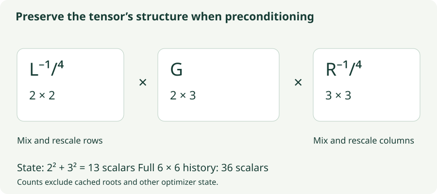

Shampoo: Preconditioning Rows and Columns
Jump to the loss-contour trajectory demo ↓
Derive matrix preconditioners, understand inverse fourth roots, and inspect their memory and computation.
A diagonal optimizer can make one coordinate’s step smaller than another’s, but it cannot generally mix them. A full preconditioner can mix every parameter with every other one, at a prohibitive storage cost. Shampoo takes advantage of a tensor’s shape: for a matrix, it stores one history for row interactions and another for column interactions.
The result is more expressive than independent coordinate scales, while remaining much smaller than a preconditioner over every flattened parameter pair. The price is matrix state, matrix powers, and implementation choices that must be made explicit.
1. What the two matrix histories contain
Let $W\in\mathbb R^{r\times c}$ be a weight matrix and $G_t$ its gradient. The original cumulative matrix version starts with $L_0=\delta I_r$ and $R_0=\delta I_c$, where $\delta>0$ provides damping:
The entry $(G_tG_t^\top)_{ab}=\sum_jG_{t,aj}G_{t,bj}$ is the dot product between gradient rows $a$ and $b$. Its diagonal measures a row’s squared norm; its off-diagonal entries measure how rows align. Similarly, $(G_t^\top G_t)_{ij}=\sum_a G_{t,ai}G_{t,aj}$ compares columns:
2. Precondition from both sides
Shampoo applies
Left multiplication mixes and rescales rows. Right multiplication mixes and rescales columns. These are matrix powers and matrix products, not element-wise inverse fourth roots.
For a symmetric positive-definite matrix $L=Q\Lambda Q^\top$, define $L^{-1/4}=Q\Lambda^{-1/4}Q^\top$. First express a vector in the eigenbasis, then scale each component by the inverse fourth root of its eigenvalue, then return to the original basis. Large accumulated-gradient directions are damped more strongly.

3. Why a fourth root on each side?
A useful sanity check is the one-coordinate case. Suppose the same scalar history $S=\delta+\sum_k g_k^2$ appears on the left and right. The update becomes $S^{-1/4}gS^{-1/4}=g/\sqrt S$. The two quarter powers combine into the familiar inverse-square-root scale.
If we used an inverse square root on both sides instead, that scalar update would become $g/S$: a different dependence on accumulated gradient magnitude. Likewise, with repeated gradients and negligible damping, each matrix history grows proportionally to $t$. Two factors of $t^{-1/4}$ yield a combined $t^{-1/2}$ scale.
This scalar check motivates the exponents; it is not a full derivation of Shampoo’s matrix guarantees. The original analysis justifies a structured preconditioner through matrix inequalities. For column-wise vectorization, the update can be written
The Kronecker product notation describes the implicit large transform. An implementation need not construct it. It is a structured alternative to full-matrix adaptation, not an exact equality between $R\otimes L$ and the complete gradient covariance in general.
4. Single-step SVD connection to orthogonalization
Write the first gradient’s SVD as $G_1=U\Sigma V^\top$ and neglect damping ($\delta\to 0$). Then the row and column Gram matrices are $L_1=G_1G_1^\top=U\Sigma^2 U^\top$ and $R_1=G_1^\top G_1=V\Sigma^2 V^\top$, so their inverse fourth roots cancel $\Sigma$ from both sides:
Thus on a single undamped gradient, Shampoo’s two-sided $-1/4$ preconditioning produces the exact polar factor $UV^\top$. Over multiple steps ($t>1$) with $L_t=\sum_{k=1}^t G_k G_k^\top$ and $R_t=\sum_{k=1}^t G_k^\top G_k$, Shampoo accumulates historical singular magnitudes ($P_t\propto t^{-1/2}$ for a constant gradient), whereas Muon normalizes the current momentum matrix at every step.
5. Lab: watch the histories accumulate
The supplied gradients have singular values 4 and 1, a right rotation of −20°, and initially a left rotation of 20°. In the rotating scenario, the left rotation changes to 70° after step 5. This separates a change of direction from a change of singular magnitude.
Row and column preconditioning
Inspect $L$, $R$, their eigenvalues, and the computed direction. The diagonal Adagrad panel uses the same supplied history and damping but stores squared entries independently.
- Repeat the same matrix: its histories grow and its preconditioned direction shrinks. This is the cumulative version, not an exponential moving average.
- Rotate after step 5: the row history changes orientation while the column Gram contribution stays the same. Verify that distinction in the displayed matrices.
- Refresh every five steps: histories still update every step, but the expensive roots are reused. The roots refresh at steps 1, 6, 11, and 16 in this demo.
- Increase damping: weak accumulated directions become less aggressively scaled. The effect is especially visible early in the run.
6. Lab: a complete Shampoo optimization trajectory
The plot uses the same eight-example quadratic objective as the SGD demo, embedded in a matrix parameter $W=\left[\begin{smallmatrix}w_1&w_2\\0&0\end{smallmatrix}\right]$. For each example, $\ell_i=\tfrac12(w-a_i)^\top H(w-a_i)$, so its matrix gradient has the coordinate gradient in the first row and zeros in the second. The matrix updates preserve this two-dimensional family, making the plotted coordinates the complete evolving parameter state.
Ellipses show equal excess full loss, $\tfrac12w^\top Hw$, with minimum at the origin. The green line is the computed trajectory; the orange point is the current iterate. The second chart reports loss after each optimizer update. A fixed learning rate can leave residual oscillations; this controlled example is not a neural-network benchmark.
This run uses the original cumulative inverse-fourth-root rule, with $L_0=R_0=0.01I$, no momentum, and no grafting. Both histories update on every optimizer step. The selected interval controls when their matrix roots are refreshed; the first update always computes them.
Shampoo: parameter path and loss by iteration
Inspect the column-history eigenvalues as the optimizer changes direction through the valley.
Compare refresh intervals 1 and 10 from the same start, then change the contour rotation. The preconditioner is derived from the actual gradients encountered along each trajectory. Its direction and step size evolve together, so it need not behave like a fixed rescaling of SGD.
7. What structure saves—and what it still costs
For a weight matrix $W\in\mathbb R^{r\times c}$ with $rc$ parameters, compare the state memory of a full flattened preconditioner, diagonal Adam, and Shampoo’s Kronecker factors:
Dense eigendecompositions scale as $O(r^3+c^3)$, and applying $L_t^{-1/4}G_t R_t^{-1/4}$ costs matrix multiplications of order $O(r^2c+rc^2)$. Blocking large dimensions, distributing state, and refreshing roots every $K$ steps amortize the $O(r^3+c^3)$ root computation.
8. Practical variants must be named
Modern implementations often use exponential averages, momentum, damping rules, delayed preconditioning, and grafting. Grafting keeps a Shampoo-like direction but gives it a step norm taken from a simpler optimizer. For example, scaling $P$ by $\|A\|_F/(\|P\|_F+\epsilon)$ borrows a reference update $A$’s magnitude.
That operation changes the role of the raw inverse roots in determining step size. Likewise, a variant with inverse square roots on both sides is not the original inverse-fourth-root update. Record the exponent, state averaging, normalization, and refresh schedule when comparing results. The Distributed Shampoo implementation documents practical engineering choices.
# Original cumulative matrix rule, refreshed every step.
# L starts at delta * I_rows; R starts at delta * I_columns.
L += grad @ grad.T
R += grad.T @ grad
left = symmetric_matrix_power(L, -0.25)
right = symmetric_matrix_power(R, -0.25)
parameter -= lr * (left @ grad @ right)The matrix-power routine must handle numerical symmetry, positive eigenvalues, and the chosen damping convention. Adding $\delta I$ means shifting eigenvalues once in the initial state here; adding damping repeatedly would be a different accumulation rule. These details matter especially when gradients are low rank.
9. Questions worth answering
No. It stores structured row and column summaries. Their combined action captures useful coupling but cannot represent every possible full preconditioner over flattened entries.
If $G'=UG$ for orthogonal $U$, then $G'^\top G'=G^\top U^\top UG=G^\top G$. The row product transforms as $UGG^\top U^\top$, so its orientation changes.
Not here. Shampoo uses second-moment gradient statistics to precondition first derivatives. Its matrix state is not the actual loss Hessian.
Sources
Gupta, Koren, and Singer, Shampoo: Preconditioned Stochastic Tensor Optimization; Distributed Shampoo implementation paper; reference engineering implementation. The arithmetic examples, memory calculation, and supplied-matrix lab are constructed for these notes.